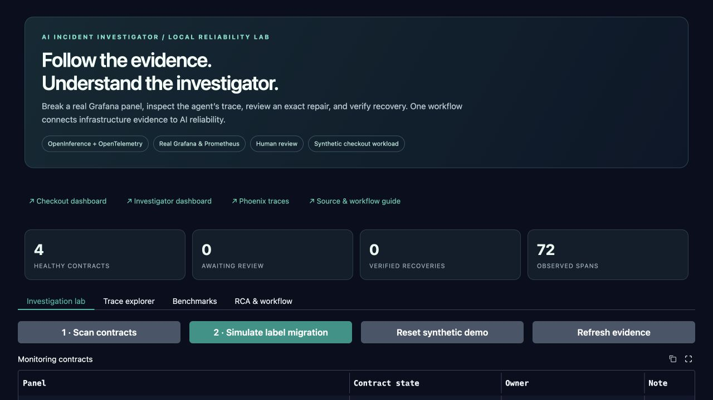
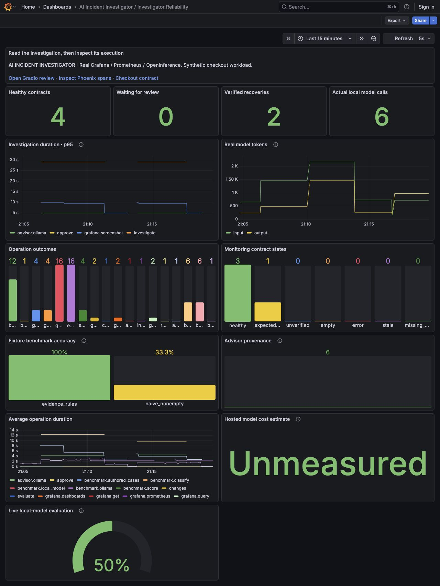

RECORDED WORKING DEMO
AI Incident
Investigator.
Follow the evidence behind a broken panel.
Understand the AI that investigates it.
A real Grafana failure, a local model’s advice, an exact reviewed repair and a verified recovery—connected through OpenInference.
Actual local execution · Synthetic checkout workload
This page replays saved evidence. It does not run a model or change infrastructure.

01 / FROM SYMPTOM TO RECOVERY
An investigation you can inspect.
Step through the recorded run. Every screen and query comes from the working local demo.
An empty panel can be healthy.
Three checkout panels expect data. The error-events panel explicitly allows emptiness. Monitoring starts with a contract about what should be present.
Loading recorded evidence…02 / OBSERVE THE INVESTIGATOR
Every operation has context.
These are real SDK spans. The model call, screenshot and query times were measured during the recorded investigation.
Loading…03 / SYSTEM-LEVEL VISIBILITY
The investigator needs monitoring too.
Real operation latency, advisor provenance, token usage and workflow outcomes feed a generated Grafana dashboard.

04 / CHECK THE QUALITY
A populated chart is not enough.
Six authored cases test classification, valid evidence references and preserved query scope. Actual local inference is reported separately from deterministic fixtures.
Local model
Loading measured results…

| Scenario | Expected | Model result | Score | Time |
|---|
This is a six-case engineering demonstration, not a production accuracy claim. Expected answers and scenario names were withheld from the model. Hardware and energy cost were not measured.
Read the methodology and boundaries ↗TAKE IT FURTHER
Run the full local workflow.
Gradio for investigation and review. Grafana for aggregate behavior. Phoenix for per-request traces. Bring an existing Ollama model or start with the labeled offline fixture.
Setup and source ↗